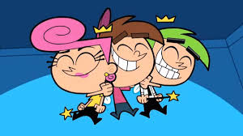
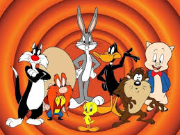
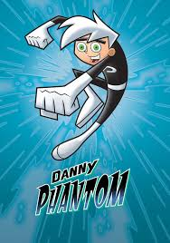

Caricaturas
Inicio Padrinos Magicos The Luny Twuns Danny Fantom Kyt vs Kat
Inicio Padrinos Magicos The Luny Twuns Danny Fantom Kyt vs Kat
Cuando se trata de recordar mi infancia tratao de hacerlo con mucha alegria y las caricaturas eran mi cosa favorita!!
| Pradrinos Magicos | The Lunny Twuns | Danny Phantom | Kyd vs Kat |
|---|---|---|---|
|  |  |  |  |
Cada niño o Niña debe de tener a sus madrinos o padrino majico es por eso que yo ya tengo el mio y es una persona muy especial, |
El verdadero significado de los amigos solo lo entiende box bonny y su tropa de twuns. | Si yo tambien hubiera sido un experimento de mis papas quisiera ser como Danny Phantom para poder convertirme en fantasma y tener superpoderes | Todo persona tiene alguin archienemigo como kid con el gato de su hermana pero en realidad no es un gato si no es extraterrestre y yo quisera ser traviesa como kat. |
| © DERECHOS RESERVADOS DE AUTOR.IVON ENRIQUEZ FLORES No.L 9 GRUPO: 403 |
|---|